En este manual, vamos a ver cómo se crea una Presentación, para poder enlazarla posteriormente como contenido adicional de nuestras ediciones digitales. Su enlace al libro es objeto de otro manual específico:
Se denomina Presentación a una imagen concreta del libro que se pretende resaltar por diversos motivos en la que van apareciendo diferentes partes de la misma de forma secuencial. Esta imagen será extraída del libro, y tras varios procesos de edición permitirá al usuario final que, al hacer diversos clics sobre la imagen, esta vaya mostrando contenido adicional de forma interactiva:
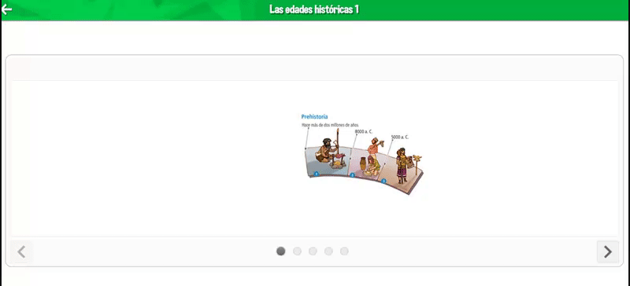Por tanto, vamos a explicar las fases de edición para conseguir generar una presentación.
Desde editorial, se nos indicará el listado las imágenes de cada página que deben convertirse en Presentación. Además, deberán proporcionarnos la mismas en formato editable mediante Photoshop (en adelante PS) y con tamaño y calidad suficiente para mostrarse a pantalla completa.
Dado que las pantallas digitales tienen unas dimensiones determinadas, lo primero que hay que hacer es adaptar las imágenes de origen proporcionadas por editorial a un tamaño adecuado, en este caso, el tamaño se refiere a la imagen completa o final de toda la presentación. Además, dado que las imágenes no se pueden deformar, habrá que diferenciar entre imágenes de sentido horizontal o vertical:
Las dimensiones indicadas son algo aproximado, una orientación inicial, ya que la infinidad de proporciones diferentes que pueden tener las imágenes nos obligará en ciertas ocasiones a rehacer el proceso hasta dar con el tamaño más adecuado. Esto suele pasar en aquellas imágenes que son “muy alargadas” tanto horizontales como verticales.
Para redimensionarlas, utilizaremos las opciones que proporciona el PS:
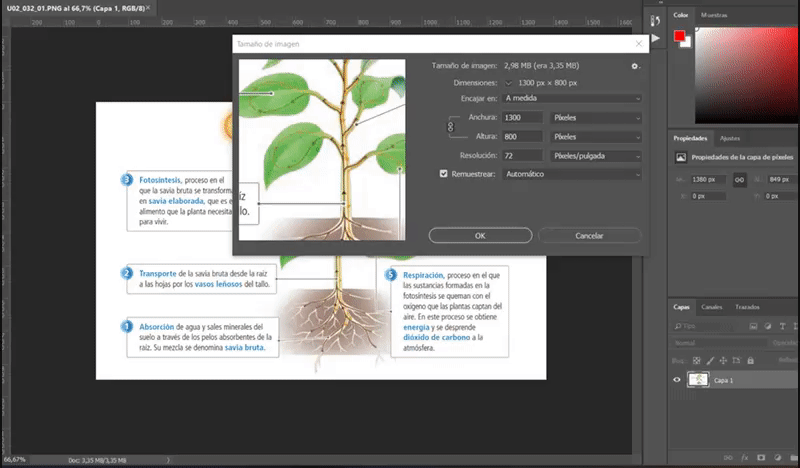Una vez redimensionada el proceso más sencillo es duplicar la imagen en varias capas, en las que iremos borrando las partes que no son necesarias en cada una de las secuencias. En el ejemplo que vamos a utilizar, necesitamos de inicio la misma imagen en 6 capas distintas:
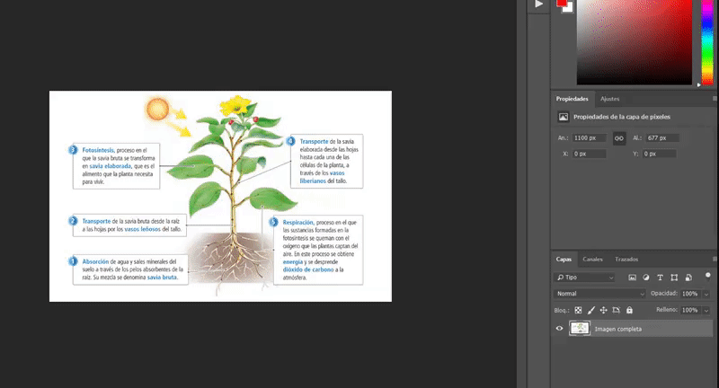 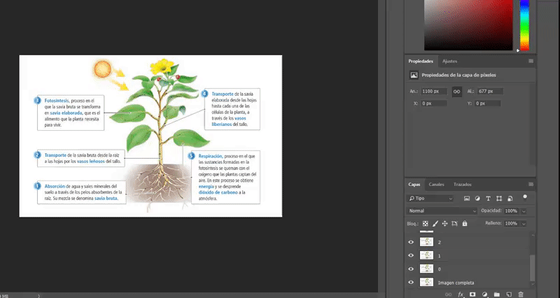En cada una de esas capas borramos mediante el PS la parte que no nos interesa:
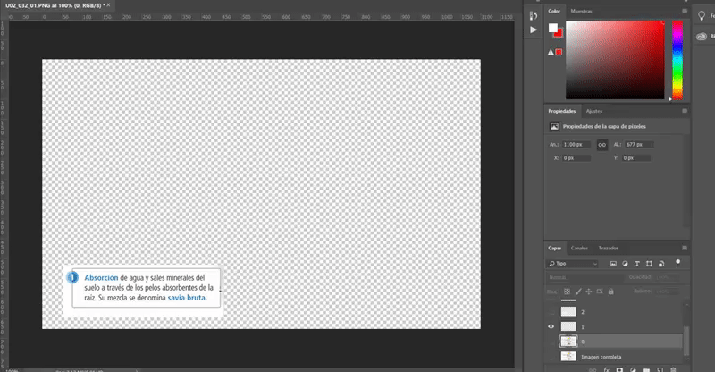Guardaremos las imágenes en png, superponiendo capas de forma incremental, para ir consiguiendo en cada una de ellas la totalidad de contenido a mostrar. En el ejemplo será:
El guardado se efectuará siempre mediante la opción de PS Archivo/Exportar/Guardar para web/ en png 24 con transparencia y sin halo:
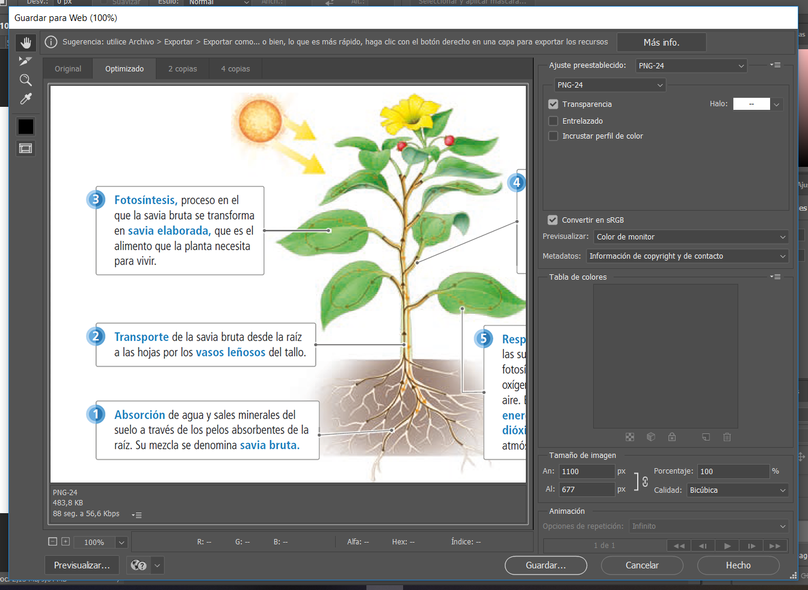Cada una de las imágenes a guardar deben nombrarse de la siguiente forma atendiendo al orden de aparición en la que queremos que se vayan a mostrar:
Es buena practica generar estas imágenes en una carpeta de trabajo fuera del repositorio del que estemos trabajando.
Una vez que las tenemos generadas, en el repositorio del libro, en la carpeta PRESENTATIONS generamos una carpeta denominada de la siguiente manera (U02_032_01):
Dentro de esta carpeta generaremos una carpeta images, y dentro de ella pondremos las imágenes que hemos creado con el PS:
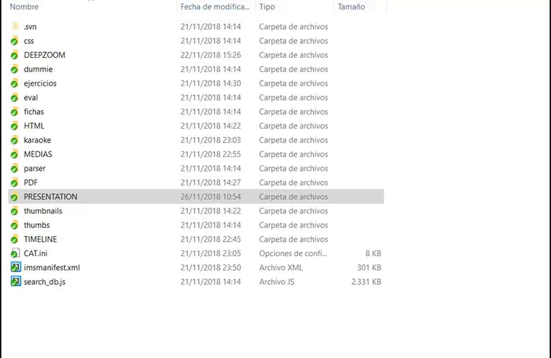Realizamos el mismo proceso con todas y cada una de las presentaciones del libro en el que estamos trabajando y comiteamos el repositorio.
Una vez que tenemos todas nuestras presentaciones comiteadas en el repositorio, tenemos que acceder al CAT.
Para poder logarse en el CAT es necesario disponer de:

Para acceder a la herramienta del Cat que nos ayudará a terminar de generar las presentaciones, denominada Presentation pulsamos el siguiente icono:
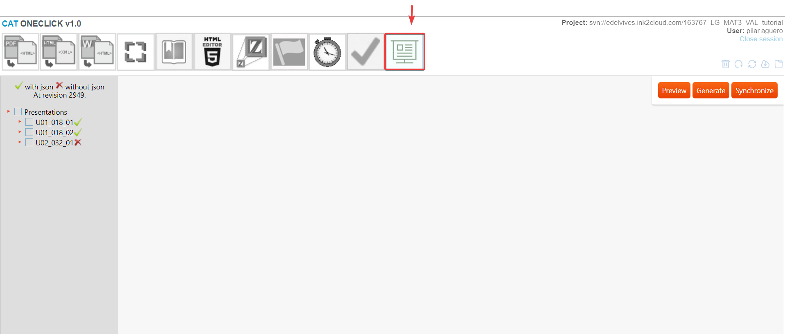Observaremos que todas las carpetas nuevas que hemos creado con las imágenes aparecen en el menú izquierdo con una “x” roja:
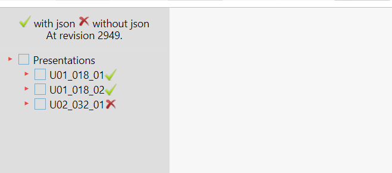Si pulsamos sobre ella, nos aparecen las imágenes que hemos generado previamente en el PS:
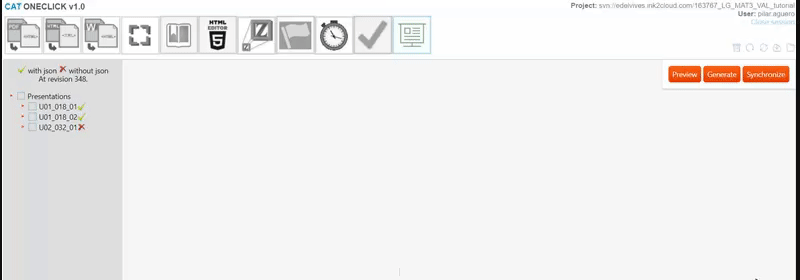En la preview podremos comprobar que el tamaño y orden de colocación es el correcto:
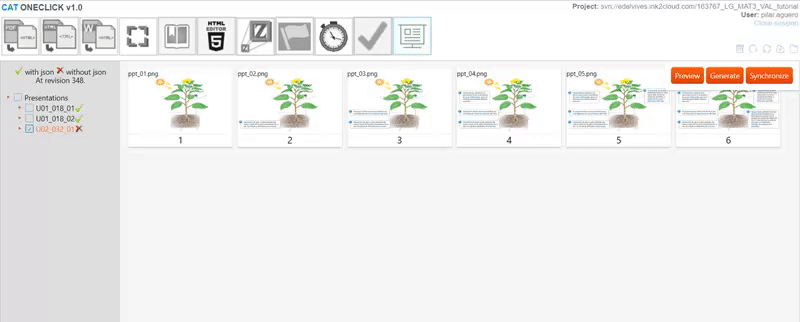En caso afirmativo cerramos la presentación y la generamos, observamos que se sincroniza con el repositorio y aparece en el menú izquierdo con una “v” verde:
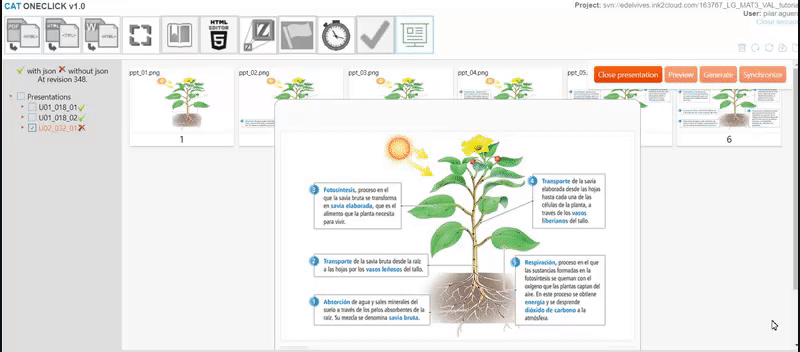Si updateamos nuestro repositorio veremos que en nuestra carpeta nos aparece el archivo “data.json”:
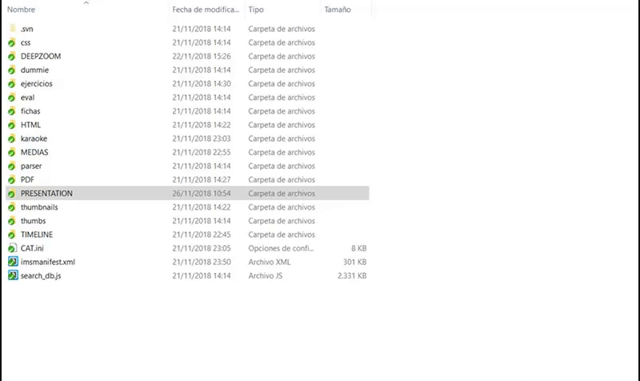De esta forma, ya tenemos nuestra presentación lista para ser enlazada.
Repetiremos esta operación con todas y cada una de las presentaciones que hayamos creado para nuestro libro.